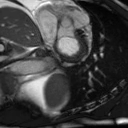
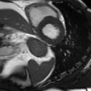
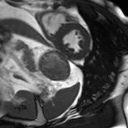

CMR
Volume2Seq


Single 3D volume
3D+t sequence
Dense cardiac dynamics are essential for assessing cardiac function, yet in practice clinicians often observe only extremely sparse measurements. However, recovering full dynamics from such sparsity is a highly ill-posed problem due to the lack of temporal cues. While auxiliary time-series signals like ECG provide physiological guidance, effectively exploiting them is challenging due to the cross-modal representation gap and phase misalignment. In this work, we present CardioFAD, a Focus-Align-Diffuse paradigm that reformulates sparse cardiac dynamic synthesis as a recoverability-alignability anchor discovery problem. Our core insight is that resolving extreme temporal ambiguity requires a compact set of anchor states that are both sufficient to recover the visual trajectory and reliable for ECG-visual alignment. We therefore learn motion-salient keyframes under two complementary principles: trajectory sufficiency, which preserves trajectory-critical intra-modal motion content, and anchor alignment, which promotes consistent inter-modal correspondence at these anchors. We implement the Focus and Align modules optimized by the two aspects. Diffuse then performs two-stage generation by first synthesizing keyframes and subsequently interpolating the remaining frames. Extensive experiments on cardiac MRI and echocardiography videos demonstrate superior visual quality, temporal coherence, and improved functional consistency under the extreme one-shot regime.
The right keyframes make motion both recoverable and alignable.
Preserve the motion needed to reconstruct the full sequence.
Connect visual states and time-series cues at informative phases.
A compact set of anchors. A coherent cardiac trajectory.
Focus on the key moments. Align the cues. Diffuse the dynamics.
Discover motion-salient keyframes that preserve the full cardiac trajectory.
Connect visual states and time-series cues through informative cardiac anchors.
Generate the keyframes first, then complete the cardiac sequence.
Focus learns motion-salient keyframes from the time-series signal. Reconstructing the full trajectory from these anchors encourages them to retain essential cardiac dynamics.
Align matches visual and time-series features by cardiac phase. Its bidirectional contrastive objective emphasizes nearby phases and gives informative keyframes greater weight.
Diffuse first generates keyframes from the sparse observation and aligned time-series guidance, then fills in the remaining frames. Both stages share one masked video diffusion model.
One volume or slice for CMR. One frame for ECHO.
+1.90 dB
Higher PSNR
UK Biobank · Volume2Seq
32.41 vs. 30.51
40.7%
Lower FVD
EchoNet-Dynamic
137.70 vs. 232.17
4.17 vs. 4.98
EF MAE (lower is better)
EchoNet-Dynamic
EF estimated from generated videos
UK Biobank · Volume2Seq3D+t CMR synthesis
| Method | PSNR ↑ | SSIM ↑ | LPIPS ↓ | FID ↓ | FVD ↓ |
|---|---|---|---|---|---|
| VideoComposer | 28.15 | 0.843 | 0.107 | 128.76 | 1762.34 |
| MotionCtrl | 28.46 | 0.825 | 0.104 | 119.52 | 1334.87 |
| Tora | 29.74 | 0.854 | 0.092 | 97.30 | 1025.57 |
| MotionPro | 27.88 | 0.817 | 0.116 | 145.39 | 1887.96 |
| CardioFAD (One-stage) | 30.51 | 0.861 | 0.082 | 82.48 | 1007.63 |
| CardioFAD (Ours) | 32.41 | 0.885 | 0.064 | 59.96 | 736.01 |
UK Biobank · Slice2Seq3D+t CMR synthesis
| Method | PSNR ↑ | SSIM ↑ | LPIPS ↓ | FID ↓ | FVD ↓ |
|---|---|---|---|---|---|
| VideoComposer | 21.86 | 0.497 | 0.289 | 314.85 | 4574.61 |
| MotionCtrl | 21.25 | 0.488 | 0.294 | 365.97 | 4914.27 |
| Tora | 23.10 | 0.539 | 0.251 | 267.92 | 3109.75 |
| MotionPro | 22.09 | 0.501 | 0.269 | 292.17 | 3756.61 |
| CardioFAD (One-stage) | 23.75 | 0.559 | 0.231 | 211.49 | 2785.30 |
| CardioFAD (Ours) | 25.60 | 0.587 | 0.198 | 163.12 | 1847.73 |
EchoNet-Dynamic2D+t ECHO synthesis
| Method | PSNR ↑ | SSIM ↑ | LPIPS ↓ | FID ↓ | FVD ↓ |
|---|---|---|---|---|---|
| General Video Generation | |||||
| VideoComposer | 22.78 | 0.539 | 0.109 | 48.25 | 284.16 |
| Tora | 23.90 | 0.548 | 0.102 | 52.06 | 241.96 |
| ECHO Video Generation | |||||
| HeartBeat | 21.24 | 0.527 | 0.122 | 58.97 | 376.51 |
| EchoNet-Synthetic | 23.58 | 0.540 | 0.107 | 49.87 | 267.35 |
| ECHOPulse | 25.63 | 0.568 | 0.081 | 37.05 | 196.28 |
| CardioFAD (One-stage) | 25.14 | 0.556 | 0.089 | 46.82 | 232.17 |
| CardioFAD (Ours) | 27.73 | 0.596 | 0.067 | 26.92 | 137.70 |
EchoNet-Pediatric (A4C)2D+t ECHO synthesis
| Method | PSNR ↑ | SSIM ↑ | LPIPS ↓ | FID ↓ | FVD ↓ |
|---|---|---|---|---|---|
| General Video Generation | |||||
| VideoComposer | 27.49 | 0.633 | 0.089 | 34.74 | 346.31 |
| Tora | 27.86 | 0.638 | 0.082 | 28.94 | 361.09 |
| ECHO Video Generation | |||||
| HeartBeat | 26.71 | 0.629 | 0.088 | 37.56 | 415.71 |
| EchoNet-Synthetic | 26.08 | 0.624 | 0.092 | 39.93 | 408.12 |
| ECHOPulse | 28.14 | 0.641 | 0.080 | 29.63 | 357.74 |
| CardioFAD (One-stage) | 28.32 | 0.643 | 0.078 | 29.23 | 339.15 |
| CardioFAD (Ours) | 29.48 | 0.657 | 0.073 | 23.21 | 286.29 |
EchoNet-Pediatric (PSAX)2D+t ECHO synthesis
| Method | PSNR ↑ | SSIM ↑ | LPIPS ↓ | FID ↓ | FVD ↓ |
|---|---|---|---|---|---|
| General Video Generation | |||||
| VideoComposer | 27.26 | 0.621 | 0.084 | 42.19 | 389.07 |
| Tora | 28.37 | 0.638 | 0.081 | 35.52 | 347.21 |
| ECHO Video Generation | |||||
| HeartBeat | 27.65 | 0.630 | 0.079 | 45.02 | 407.26 |
| EchoNet-Synthetic | 26.23 | 0.612 | 0.090 | 48.82 | 432.50 |
| ECHOPulse | 28.50 | 0.639 | 0.080 | 37.57 | 367.46 |
| CardioFAD (One-stage) | 28.77 | 0.640 | 0.079 | 39.17 | 381.06 |
| CardioFAD (Ours) | 29.59 | 0.645 | 0.071 | 27.12 | 293.86 |
Scroll horizontally to view all metrics
Ground truth
CardioFAD
Ground truth
CardioFAD
Ground truth
CardioFAD
Ground truth
CardioFAD
Ground truth
CardioFAD
Ground truth
CardioFAD
Ground truth
CardioFAD
Ground truth
CardioFAD
Ground truth
CardioFAD
Ground truth
CardioFAD
Ground truth
CardioFAD
Ground truth
CardioFAD
Ground truth
CardioFAD
Ground truth
CardioFAD